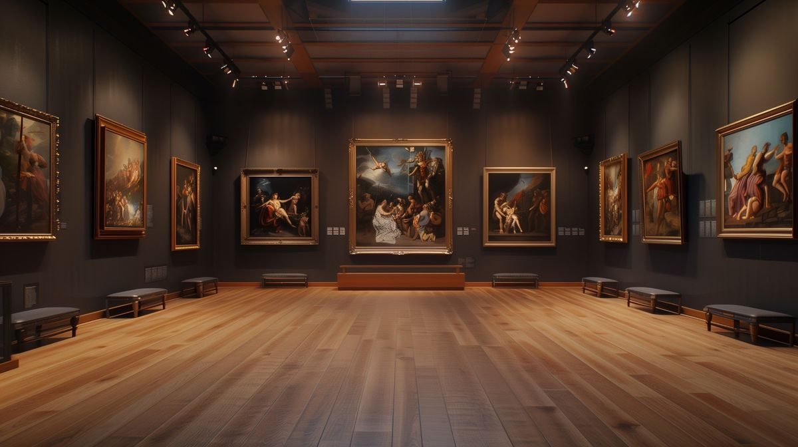

Organized Documentation
Maintain structured and searchable information for museum artifact records.
A centralized web-based information and filing system designed to help Museo de Lucena securely document, organize, manage, and retrieve artifact records.

Museo de Lucena
Museo de Lucena preserves historical and cultural materials that contribute to the documentation of Lucena City's heritage.
The Web-Based Information and Filing System for Artifact Records is designed to replace inefficient paper-based record management with an organized digital platform.
It provides authorized museum personnel with tools for recording, updating, searching, retrieving, and managing artifact information through a centralized system.
Maintain structured and searchable information for museum artifact records.
Authentication and role-based access help protect museum information from unauthorized users.
Search and filtering functions make locating artifact information faster and more convenient.
The platform focuses on the essential functions required for maintaining accurate, accessible, and secure artifact documentation.
Record and maintain artifact information including descriptions, categories, historical background, origin, condition, and related details.
Locate specific artifact records efficiently through keyword search and organized filtering functions.
Restrict management functions to authorized Administrators and Museum Staff using secure accounts.
Generate organized summaries that support artifact documentation, inventory monitoring, and administrative requirements.
Digitizing artifact information supports the long-term organization and preservation of historical records while reducing reliance on vulnerable paper-based documentation.
The project supports cultural heritage preservation in connection with Sustainable Development Goal 11.4.
Sign in to manage artifact records and access protected system functions.